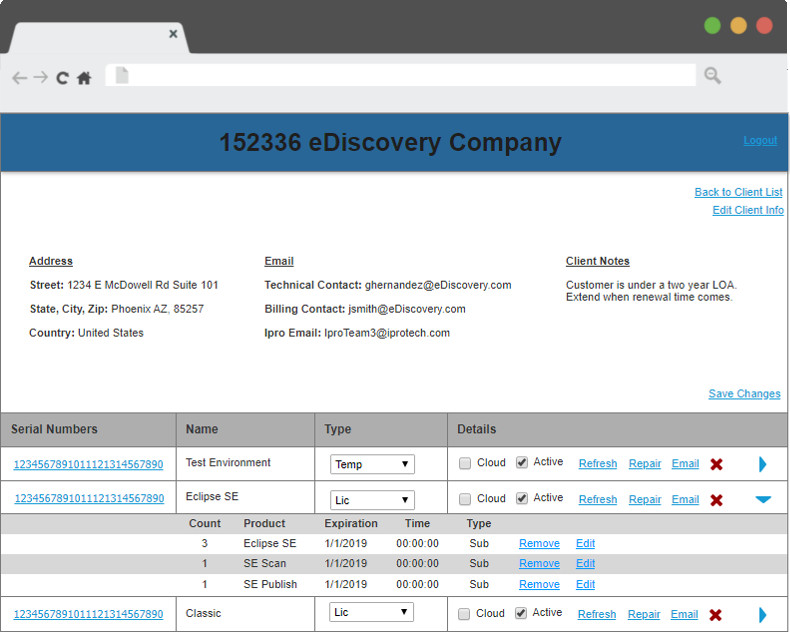

Ipro’s Product Authorization Management Application (PAM) is an internal tool that allows users to authorize software for clients. The tool also allows its users to set expiration dates and send email notifications. As a sales assistant who
uses the tool daily, I became interested in improving the applications interface because I often found it confusing to use. The information that PAM displays is extremely valuable but it definitely needs a few improvements.
Before I began this project, I knew it was very important to have a clear picture of the products current structure. I conducted a full content inventory to assess what changes would be necessary to improve the information architecture and enhance the products functionality.
I knew the things I dislikes about the application but I also wanted to hear what the rest of my team thought. I asked two other sales assistants how they felt about PAM. I created user personas for both of them.
After their feedback was collected, I created low-fidelity wireframes to map the new applications structure and layout. I knew I didn’t want to change the functionality, my main goal was to improve the way information was displayed while still offering users familiarity with the old design. I was focused on making account searching easier, so I incorporated a new advanced search option that allows users to customize their searching criteria.
After my wireframes were created, I went back to my team and collected their feedback. They all agreed the Advanced Search option was a good idea but they disliked the client details page. This section felt way too similar to the old PAM and didn't offer new functionality. I went back to my wireframes and rearranged my design based on their feedback. Once I felt confident in my design, I worked on the final prototype. This time, I tried to address some of the concerns surrounding the Client Details page.
The new PAM interface looks fairly similar to the old design but the user experience has dramatically improved. Now, the user will know exactly what they’re signing in to when visiting the application.
In my initial wireframe, I created two pages. One for advanced searching the other for recent accounts. Based on our user feedback, I decided to combine both as one page. This gives users the ability to see their recent accounts and search on their desired criteria. I also moved the options to add or delete accounts, those buttons are now clearly displayed on the left. Active serial numbers are still represented with a number under its respective column. If the user wants to view more details about the account, they are able to do so by clicking on the highlighted company name. This action will transition them to the client details page.
The client details page will now show three different sections on top displaying an accounts address, email and notes. All of these sections are editable if the Edit Client Info option is selected. Below that we will see a complete list of serial numbers with names and types.
In the past, only one serial number could be displayed at a time. This made gathering information from multiple serial numbers very time consuming for the users. Now, multiple serial numbers can be expanded at a time by clicking on the right caret. The expansion will show license count, expiration dates and other details.
My approach to this project was to keep things simple and easy to read. I didn’t want a drastic change that would cause confusion to our long term users. I took into consideration my teams input and their pain-points with every change I made. The improvements might’ve been subtle but definitely meaningful.